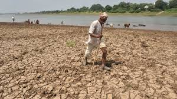
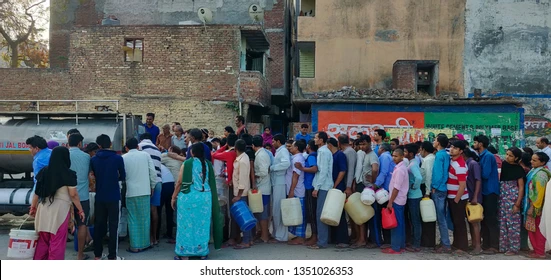

Gallery: The Reality of Water Crisis
Below are powerful images that reveal the grim face of India’s water scarcity:

A dry river bed in central India — once a source of livelihood, now abandoned.
Rural villagers queueing for tanker water — a daily ordeal in many regions.
Every image is a call to action. Let these visuals awaken responsibility and urgency to bring change.